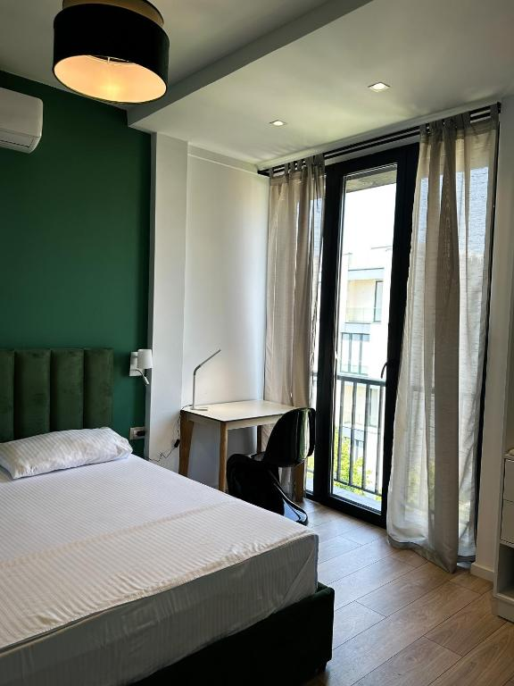
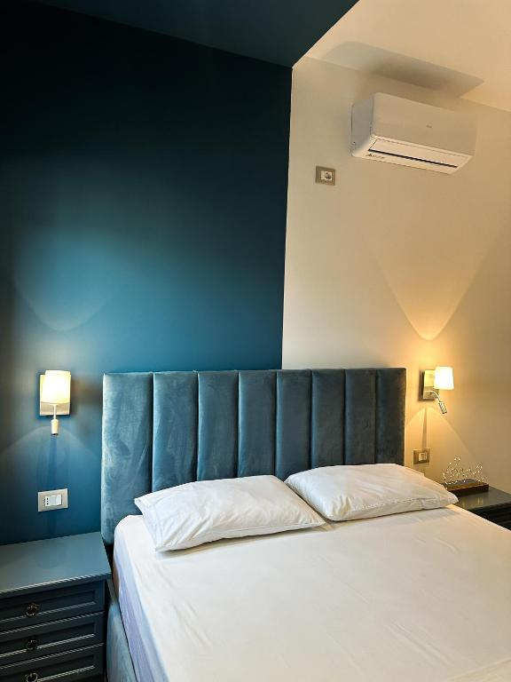
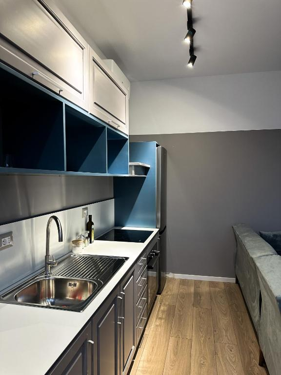
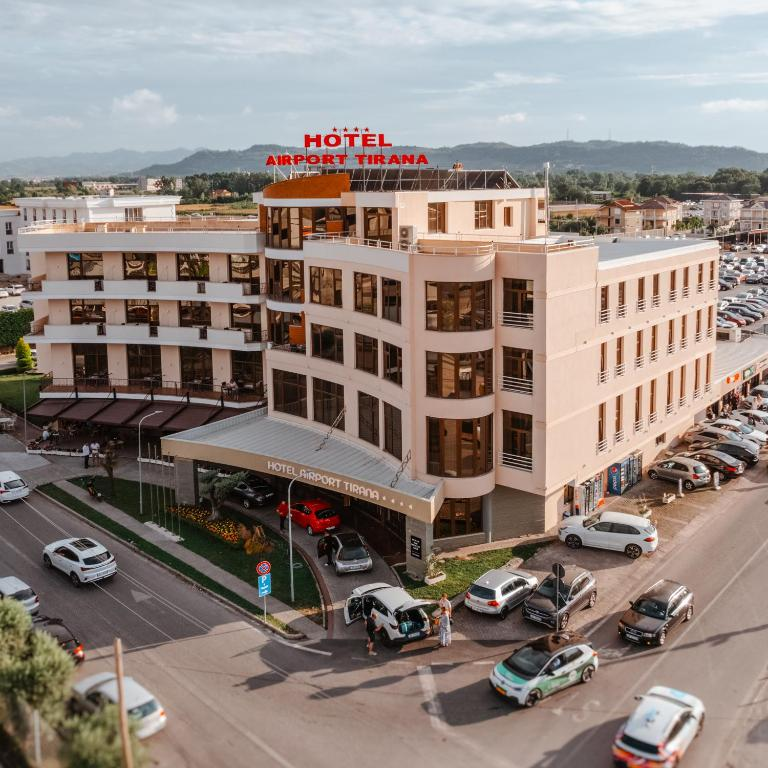
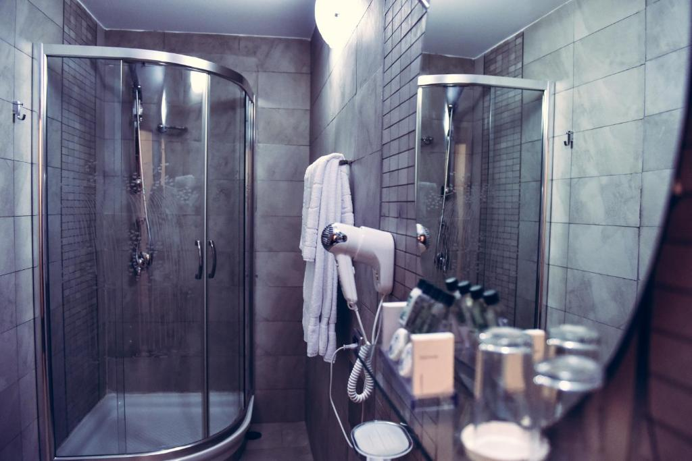
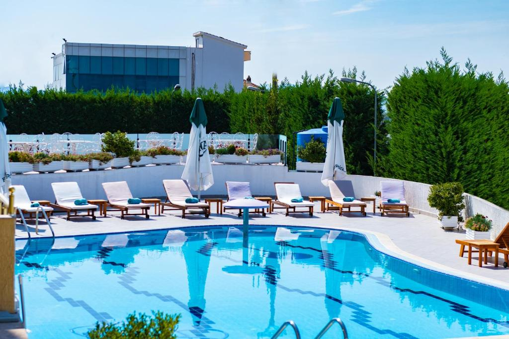
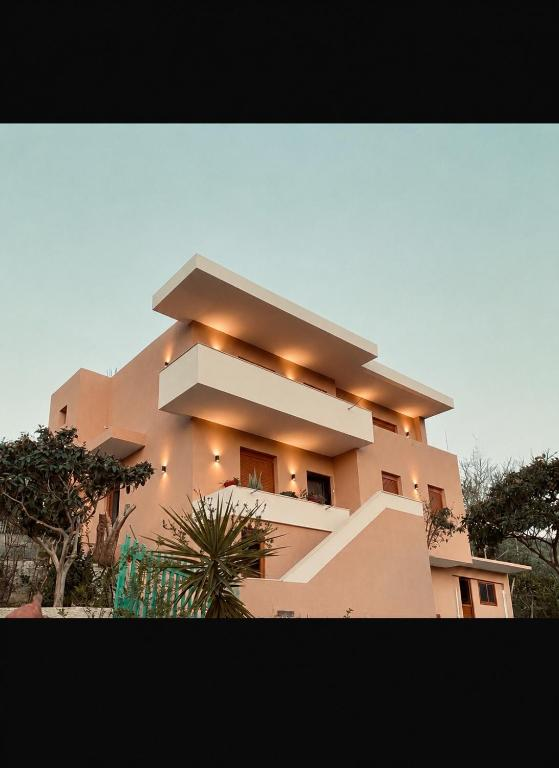
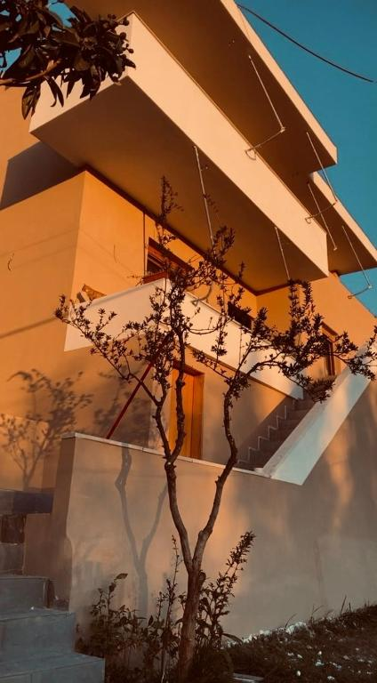
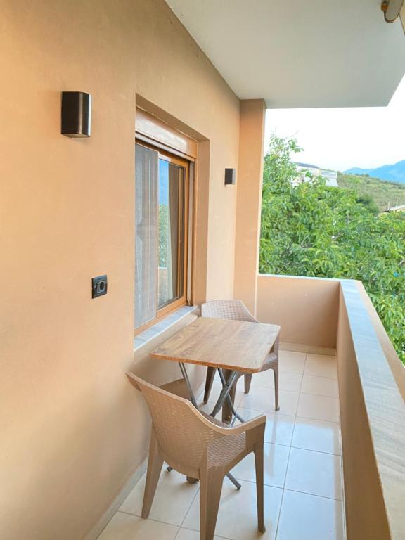
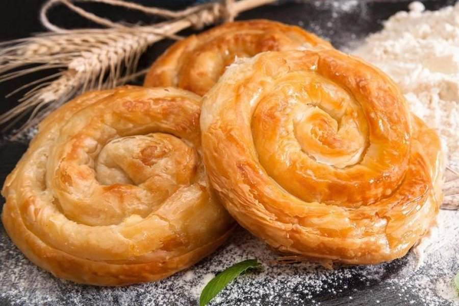

Keturių dienų kelionė po pietų ir centrinę Albaniją – Osmanų laikų miestai Krujė ir Beratas, dramatiškas Osumio kanjonas, Vlorės pakrantė ir Divjakės-Karavastos lagūna su pelikanais ir flamingais. Skrendate iš Varšuvos, visą kelionę vežimuisi naudojamas nuomotas automobilis. Žemiau rasite nakvynės vietas, dienos planus su atvykimo laikais ir žemėlapio nuorodomis, orų prognozę, biudžetą ir patarimus kelyje.
🏠 Nakvynė
Tirana — 10-30 → 10-31 (1 naktis)
Hanna Apartment
Rruga e Elbasanit, Tirana, Albanija
Apartamentas Tiranoje su kondicionieriumi ir nemokamu WiFi, tinka 4 žmonėms.


- Ponte – kavinė · 60 m · ~1 min pėsčiomis · 📍 Google Maps
- Fast Food Dortmund – greitas maistas · 100 m · ~1 min pėsčiomis · 📍 Google Maps
- Piceri Ateneo – greitas maistas · 100 m · ~1 min pėsčiomis · 📍 Google Maps
- Sugar Tirana – sushi restoranas · 100 m · ~1 min pėsčiomis · 📍 Google Maps
- KFC – vištiena · 110 m · ~2 min pėsčiomis · 📍 Google Maps
- Mon Cheri coffee shop · 160 m · ~2 min pėsčiomis · 📍 Google Maps
- Conad (supermarketas, 08:00–22:00) · 160 m · ~2 min pėsčiomis · 📍 Google Maps
- Pronatyra MD (supermarketas) · 160 m · ~2 min pėsčiomis · 📍 Google Maps
Tirana Getaway Apartments - Central
87 Rruga Mihal Duri, Tirana
Oro kondicionuojamas apartamentas su balkonu ir kalnų vaizdu, 13 km nuo oro uosto.



Apartamentų aprašymas
Patogus apgyvendinimas: butas su nemokamu WiFi, oro kondicionieriumi ir balkonu. Virtuvėlėje – šaldytuvas, orkaitė, viryklė ir skrudintuvė.
Patogūs patogumai: privatus įregistravimas ir išregistravimas, mokamas transferas, liftas, lauko sėdėjimo vieta, dviračių stovėjimo vieta.
Puiki vieta: 13 km nuo Tiranos tarptautinio oro uosto.
Hotel Airport Tirana
Priešais Tiranos oro uostą, Rinas
Modernus 4 žvaigždučių viešbutis tiesiai priešais oro uostą – patogu dėl vėlyvo atskridimo.



Beratas — 10-31 → 11-01 (1 naktis)
DD Villa
Rruga Antipatrea, Beratas, Albanija
Sodas, baras, bendra svetainė ir miesto vaizdas Berate. Pusryčiai (bufetas/à la carte), privatus parkavimas už papildomą mokestį, restoranas vietoje.


Apartamentų aprašymas
Berate įsikūrusi DD Villa turi sodą, barą ir bendrą svetainę, iš kurios atsiveria miesto vaizdas. Privatų parkavimą galima užsisakyti už papildomą mokestį. Nakvynės įstaiga pasiūlys oro kondicionuojamus numerius su spinta, virduliu, indaplove, mikrobangų krosnele, saugia dėžute, plokščio ekrano televizoriumi ir privačiu vonios kambariu su bide. Nemokamas WiFi prieinamas visiems viešintiesiems, kai kuriuose numeriuose yra terasa.
Kiekviename numeryje yra patalynė ir rankšluosčiai. Nakvynės įstaigoje galima pasirinkti bufetinius, à la carte arba kontinentinius pusryčius. Svečiai kviečiami pavalgyti šeimai pritaikytame restorane vietoje, kuris dirba vakarienės, pietų, brunch ir high tea metu.
Prie nakvynės įstaigos organizuojami ekskursijos. Galima išsinuomoti dviratį ar automobilį, netoliese galima dviračiu pavažiuoti. Tiranos tarptautinis oro uostas yra 120 km nuo objekto, siūlomas mokamas transferas iš oro uosto.
- Local Spot - Wine and more – restoranas · 80 m · ~1 min pėsčiomis · 📍 Google Maps
- ELVI Tradicional Food & Grill – restoranas · 80 m · ~1 min pėsčiomis · 📍 Google Maps
- Restaurant Mangalemi – restoranas · 120 m · ~2 min pėsčiomis · 📍 Google Maps
- Te Çuci – restoranas · 140 m · ~2 min pėsčiomis · 📍 Google Maps
- Bar Shpëtimi – kavinė · 160 m · ~2 min pėsčiomis · 📍 Google Maps
- Conad (supermarketas, 07:30–22:30) · 80 m · ~1 min pėsčiomis · 📍 Google Maps
- Fruta Perime (daržovių parduotuvė) · 100 m · ~1 min pėsčiomis · 📍 Google Maps
- Mini market · 120 m · ~2 min pėsčiomis · 📍 Google Maps
GrandView Hotel
~1,3 km nuo Mangalemo kvartalo, nemokamas parkavimas, bufetiniai pusryčiai su vietiniais patiekalais.
Daugiau informacijosHotel Gorica
Goricos kvartale, arčiau Goricos tilto, nemokami pusryčiai ir WiFi.
Daugiau informacijosVlorė — 11-01 → 11-02 (1 naktis)
Hotel Liro – Adults Only
Aleksandër Moisiu Street, Vlorė, Albanija
Privatus paplūdimio ruožas su nemokamais gultais ir skėčiais, lauko baseinas, restoranas/baras su terasa, vaizdas į jūrą nuo balkono. Autobusų stotelė priešais viešbutį.
⚠️ Tik suaugusiems ("Adults Only") – jei grupėje bus vaikų, žr. alternatyvas žemiau.


Apartamentų aprašymas
Vlorėje įsikūręs Hotel Liro – Adults Only turi privačią paplūdimio zoną su nemokamais gultais ir skėčiais. Baras ir restoranas vietoje turi erdvią terasą, kurioje svečiai gali mėgautis Viduržemio jūros patiekalais. Visuose numeriuose yra WiFi.
Visi numeriai oro kondicionuojami, su įstiklintu balkonu, iš kurio atsiveria vaizdas į jūrą. Kiekviename numeryje yra palydovinė televizija, mini baras ir saugas. Privatūs vonios kambariai su dušu, plaukų džiovintuvu ir nemokamomis tualetinėmis priemonėmis.
Hotel Liro – Adults Only siūlo daugybę veiklų vietoje ir aplinkoje, tarp jų – burlenčių sportas. Vlorės centras ir panoraminis Kuzum Baba vaizdas yra per 6 km. Oricumo archeologinis parkas yra 10 km nuo viešbučio. Llogaros nacionalinis parkas – 25 km. Vietinė autobusų stotelė tiesiai priešais viešbutį. Tiranos oro uostas – 150 km. Nemokamas parkavimas.
- Taverne Te LILO – vietinė virtuvė (08:00–23:00) · 20 m · ~1 min pėsčiomis · 📍 Google Maps
- Marfein – restoranas · 70 m · ~1 min pėsčiomis · 📍 Google Maps
- Hera – greitas maistas · 150 m · ~2 min pėsčiomis · 📍 Google Maps
- Mambo – kavinė · 180 m · ~2 min pėsčiomis · 📍 Google Maps
- Rivieta – greitas maistas · 180 m · ~2 min pėsčiomis · 📍 Google Maps
- Bio shop · 40 m · ~1 min pėsčiomis · 📍 Google Maps
- Rossmann & Lala (08:30–22:00) · 50 m · ~1 min pėsčiomis · 📍 Google Maps
- Albidea (supermarketas) · 100 m · ~1 min pėsčiomis · 📍 Google Maps
Tirana Resort Radhime
2 min pėsčiomis nuo Baro Beach, nemokamas parkavimas, sezoninis baseinas, sodas, restoranas.
Booking.comAPARTAMENT RADHIME
Šeimos kambariai su vaizdu į jūrą/sodą, nemokamas parkavimas, 6 min pėsčiomis nuo Al Breeze Beach.



Biudžeto suma nakvynėms (3 naktys, visai grupei): 51 € + 61 € + 117 € = 229 €
📅 1 diena · penktadienis, 2026-10-30 — Atvykimas į Tiraną
🌦 Tiranoje tikėtinas lengvas lietus, 12–20 °C, vėjas iki 5,7 km/h.
Skrydis iš Varšuvos nusileidžia 20:30. Automobilio nuomos (VW Tiguan ar panašus visureigis, tinka 4 žmonėms ir bagažui, su papildomo vairuotojo ir pilnos apsaugos draudimu) atsiėmimas 21:00. Tą pačią vietą reikės grąžinti automobilį lapkričio 2 d. iki 17:00.

Pirma nakvynė – butas Rruga e Elbasanit, kondicionierius, nemokamas WiFi, tinka 4 žmonėms. Kelias nuo oro uosto apie 20 min, vėlai vakare eismas ramus.
📅 2 diena · šeštadienis, 2026-10-31 — Krujė, Belšo ežeras ir Beratas
🌧 Berate tikėtinas lietus, 10–18 °C.Jei lis – žr. Planą B dienos apačioje.

Skenderbego muziejus pilies viduje, bilietas apie 200 lekų (~2 €). Žiemos darbo laikas apytiksliai 09:00–16:00 – darbo laiką verta pasitikrinti. Prie pilies – senasis bazaras su amatininkų dirbiniais ir suvenyrais.

Trumpas sustojimas pakeliui – gražus Dumrės plokščiakalnio ir ežerų vaizdas, proga kavai ir nuotraukai.

Populiarus namų virtuvės restoranas Mangalemo kvartale, vietiniai patiekalai. Vos šešių staliukų šeimyninis restoranėlis – vienas geriausiai įvertintų Berate (4,9/5), rezervacija būtina. Pietūs ~13 €/asm.

Pasivaikščiojimas osmanų laikų gatvelėmis su garsiaisiais „tūkstančio langų“ namais.

Gyvenama pilis su bizantiškomis bažnyčiomis. Įėjimas į teritoriją laisvas, Onufrijaus muziejuje bilietas apie 200 lekų – darbo laiką verta pasitikrinti.

Osmanų laikų akmeninis tiltas per Osumo upę – ypač gražus prieblandoje, puikus vaizdas į Mangalemą.

Nakvynė Berate – sodas, baras, pusryčiai, privatus parkavimas už papildomą mokestį.
🌧 Planas B (jei blogas oras)
Kodėl: Mangalemo kvartalo pasivaikščiojimas, Berato pilies teritorijos apžiūra ir Goricos tilto pasivaikščiojimas vyksta lauke ir gerokai nuvilia per lietų; Belšo ežero sustojimas yra tik trumpas vaizdas nuo kelio, todėl mažiau jautrus. Pagrindinį lauko laiką Berate pakeičia du uždari muziejai.
{{Krujė ir uždari Berato muziejai vietoj pasivaikščiojimų}}
🚗 Skenderbego muziejus yra uždaras, pilies viduje – tinka ir lyjant. Prie pilies – senasis bazaras su uždengtomis amatininkų parduotuvėlėmis.
🚗 Jei lyja, pakanka pažvelgti į ežerą pro automobilio langą ir nereikia ilgai stovėti lauke.
🚗 Uždaras namų virtuvės restoranas Mangalemo kvartale – tinka bet kokiam orui.
🚶 Uždaras muziejus pilies teritorijoje su bizantiškomis ikonomis – gera alternatyva vietoj ilgo pasivaikščiojimo pilies mūruose per lietų. Žiemą dirba antr.–šešt. 9:00–16:00.
🚶 Osmanų laikų namas Mangalemo kvartale su autentiškais vidaus interjerais – uždara, patogi vietoj lauko pasivaikščiojimo gatvelėmis.
🚶 Pasiekiama trumpu pasivaikščiojimu nuo Mangalemo kvartalo. Planas B baigiasi toje pačioje vietoje, kaip ir pagrindinis planas.
Bendras vairavimo laikas: apie 179 min.
🧭 Plano B maršrutas: 🚗 Automobiliu 🧭 Plano B maršrutas: 🚶 PėsčiomisPatarimas: Onufrijaus ikonografijos ir Etnografinis muziejai žiemos sezonu (nuo lapkričio 1 d.) dirba antradieniais–šeštadieniais 9:00–16:00, pirmadieniais nedirba – šeštadienį, spalio 31 d., abu veikia.
📅 3 diena · sekmadienis, 2026-11-01 — Osumio kanjonas ir Vlorės pakrantė
⛈ Vlorėje tikėtina perkūnija (54 % tikimybė, ~8,6 mm), 13–18 °C, vėjas iki 7,2 km/h.Didelė lietaus tikimybė – šiandien Planas B gali būti geresnis pasirinkimas.

Vienas gražiausių gamtos vaizdų kelyje – kanjono apžvalgos aikštelė prie kelio, patogi stovėjimo vieta.

Vlorės uosto promenadoje daug žuvies restoranų. Rekomenduojame Kaço Fish Restaurant – šeimyninė žuvies tavernelė su labai šviežia žuvimi, ~15 €/asm.

Pasivaikščiojimas pakrante, vaizdas į Jonų jūrą ir Sazano salą.

Nakvynė Vlorėje – privatus paplūdimio ruožas, lauko baseinas, vaizdas į jūrą nuo balkono. Tik suaugusiems.
🌧 Planas B (jei blogas oras)
Kodėl: Osumio kanjono apžvalgos aikštelė ir Lungomare pakrantės promenada Vlorėje yra lauke, o dieną numatoma perkūnija su smarkiu lietumi – abi vietos nepatrauklios ir rizikingos per audrą. Kanjonas pakeičiamas trumpu žvilgsniu nuo kelio, o popietės promenada – uždaru muziejumi.
{{Vlorės nepriklausomybės muziejus vietoj promenados}}
🚗 Per perkūniją pakanka trumpo žvilgsnio nuo kelio pakraščio, neišlipant ilgam iš automobilio.
🚗 Uždaras muziejus, skirtas 1912 m. Nepriklausomybės paskelbimui Vlorėje. Sekmadieniais dirba tik iki 14:00, todėl apsilankoma prieš pietus.
🚶 Uždaras žuvies restoranas uosto promenadoje – tinka ir lyjant ar perkūnijai.
🚶 Atvykstama anksčiau nei pagrindiniame plane – likusią popietę per blogą orą galima praleisti viešbučio uždarame bare ar baseino zonoje. Planas B baigiasi toje pačioje vietoje, kaip ir pagrindinis planas.
Bendras vairavimo laikas: apie 156 min.
🧭 Plano B maršrutas: 🚗 Automobiliu 🧭 Plano B maršrutas: 🚶 PėsčiomisPatarimas: Vlorės Nepriklausomybės muziejus sekmadieniais dirba tik 9:00–14:00, todėl aplankyti reikia prieš pietus, iškart po atvykimo į miestą.
📅 4 diena · pirmadienis, 2026-11-02 — Divjakė-Karavasta ir išvykimas
⛈ Paskutinę dieną tikėtina perkūnija (45 % tikimybė, ~12 mm), 6–14 °C, vėjas iki 9,5 km/h.Didelė lietaus tikimybė – šiandien Planas B gali būti geresnis pasirinkimas.

Automobilį palikite Lankytojų centro aikštelėje – čia veda geras asfaltuotas/tvarkingas kelias, o čia pat yra apie 35 m aukščio apžvalgos bokštas su gražiu vaizdu į lagūną. Jei norite pasiekti giliau lagūnoje esantį bokštą, paskutinius 1–2 km (ir tiek pat atgal) reikia nueiti pėsčiomis – nuomotam automobiliui tas kelias po lietaus būna dumblinas ir netinkamas. Rudenį čia gerai matomi rausvieji pelikanai ir flamingai. Nedidelis mokestis automobiliui įvažiuojant į parką.

Paplūdimio žuvies kioskai ir restoranėliai. Rekomenduojame Pelikan (~15 €/asm.) – geriausiai įvertintas restoranas Divjakėje (4,8/5). Alternatyva: Divjaka Fish Restaurant – žuvis tiesiai iš lagūnos, sodas pušyne.

Automobilio grąžinimas (reikia iki 17:00) – atsargos laiko pakaks. Skrydis į Varšuvą išskrenda 19:05 – registracijai ir saugumo patikrai liks pakankamai laiko.
🌧 Planas B (jei blogas oras)
Kodėl: Giliau į lagūną vedantis pažintinis takas bei pietūs paplūdimio žuvies kioskuose vyksta lauke – per perkūniją tai nepatogu, o takas būna dumblinas. Laikas perskirstomas: daugiau laiko praleidžiama uždaroje Lankytojų centro ekspozicijoje, o pietūs – uždarame restorane miestelyje, ne paplūdimyje.
{{Daugiau laiko uždaroje Karavastos ekspozicijoje ir pietūs Divjakėje}}
🚗 Automobilis paliekamas aikštelėje. Per lietų daugiau laiko praleidžiama uždaroje ekspozicijoje apie pelikanus ir flamingus; giliau į lagūną vedantis 1–2 km pėsčiasis takas per lietų būna dumblinas, todėl jo šį kartą nesirenkame.
🚗 Uždaras, gerai vertinamas žuvies restoranas Divjakės miestelyje (ne paplūdimyje) – patogi alternatyva per lietų.
🚗 Atvykstama su dar didesne atsarga laiko nei pagrindiniame plane. Automobilio grąžinimas iki 17:00, skrydis į Varšuvą išskrenda 19:05.
Bendras vairavimo laikas: apie 103 min.
🧭 Plano B maršrutas: 🚗 AutomobiliuPatarimas: „Pelikan“ restoranas Divjakėje yra viena geriausiai įvertintų vietų miestelyje – atvykus apie 13:00 stalo paprastai netrūksta.
🗺️ Žemėlapis
💶 Biudžeto suvestinė
4 keliautojai, 3 nakvynės, 2026-10-30 → 2026-11-02.
| Kategorija | Tikėtina suma | Pastaba |
|---|---|---|
| Skrydžiai (WAW↔TIA, 4 asm.) | 405 € | Ryanair, be registruoto bagažo |
| Automobilio nuoma (4 d., pilnas draudimas) | 140–185 € | Žr. „Automobilio nuoma“ žemiau |
| Degalai (~520 km) | 92 € | Dyzelinas ~2,35 €/l |
| Nakvynė (3 naktys, visai grupei) | 229 € | Patvirtinta pagal užsakymus |
| Maistas (4 asm. × 4 d.) | 452 € | Žr. lentelę žemiau |
| Įėjimo bilietai | 35 € | Krujė, Beratas, Karavasta |
| Iš viso (visai grupei) | ≈1 353 € | Intervalas 1 264–1 524 € |
| Vienam asmeniui | ≈338 € | Intervalas 316–381 € |
Maisto detalizacija (€/asm.)
| Diena | Pusryčiai | Pietūs | Vakarienė | Iš viso/asm. |
|---|---|---|---|---|
| 1 (atvykimas) | — | — | 17 € | 17 € |
| 2 (Krujė→Beratas) | 5 € | 13 € | 19 € | 37 € |
| 3 (Osumi→Vlorė) | 0 € (su nakvyne) | 15 € | 24 € | 39 € |
| 4 (Divjakė→išvykimas) | 0 € (su nakvyne) | 15 € | 5 € | 20 € |
Automobilio nuomos kainų skirtumas priklauso nuo pasirinktos įmonės – pigiausia Rent Car Tirana (140 €), jūsų gautas Karruka pasiūlymas su pilnu draudimu kainuoja 168 €.
ℹ️ Praktinė informacija
- Saugumas: policijos greičio patikros kelyje dažnos, alkoholio limitas vairuotojams – 0,01 % (praktiškai nulinė tolerancija).
- Vairavimas naktį: kaimo kelių ruožai neapšviesti, gali netikėtai pasirodyti gyvuliai ar pėstieji – vakare vairuoti nerekomenduojama.
- Mokami keliai: Llogaros tunelis ir A1 greitkelis link Kosovo yra mokami.
- Staigūs potvyniai: po smarkaus lietaus Vjosos ir Osumo upių slėniuose gali kilti staigūs potvyniai.
- Pagalbos telefonas: 112 (bendras pagalbos skambučių numeris Albanijoje).
Kelionės duomenys
- Automobilio grąžinimas: Tiranos oro uoste (TIA), iki 2026-11-02, 17:00.
- Skrydis į Albaniją: Varšuva 18:30 → Tirana 20:30, 2026-10-30.
- Skrydis namo: Tirana 19:05 → Varšuva ~21:05, 2026-11-02.
- Kontaktai Albanijoje: — (įrašykite automobilio nuomos ir viešbučių telefono numerius prieš kelionę).
⚠️ Patarimai kelyje
- Prie Osumo kanjono apžvalgos aikštelės Google Maps kartais siūlo trumpesnį kelią toliau per Pėrmetą -- tai žvyrkelis, netinkamas standartiniam automobiliui. Važiuokite tik iki apžvalgos aikštelės prie Čorovodės ir grįžkite tuo pačiu asfaltuotu keliu per Beratą ir toliau per Fierą į Vlorę.
- Berato senamiestyje Mangalemo ir Goricos kvartalus geriausia apžiūrėti pėsčiomis -- tiltas per Osumo upę skirtas tik pėstiesiems.
- Karavastos-Divjakės nacionaliniame parke automobilį palikite Lankytojų centro aikštelėje -- čia veda geras asfaltuotas kelias ir čia pat yra apžvalgos bokštas. Jei norite pasiekti giliau lagūnoje esantį bokštą, paskutinius 1-2 km nueikite pėsčiomis, nes tas kelias po lietaus būna dumblinas.
- Antrą ir trečią kelionės dieną vairavimo laikas artėja prie 4 valandų -- neplanuokite papildomų stotelių, kad liktų laiko ramiai pasigrožėti Krujë, Beratu ir kanjonu.
- Paskutinę dieną grįžus į Tiranos oro uostą iki skrydžio liks apie 2 val. 40-50 min -- automobilio grąžinimui ir registracijai laiko turėtų pakakti.
☁️ Orų prognozė
| Diena | Vieta | Oras | Temperatūra | Lietaus tikimybė | Vėjas |
|---|---|---|---|---|---|
| Pn, 2026-10-30 | Tirana | Lietus | 12–20 °C | 15 % | iki 5,7 km/h |
| Št, 2026-10-31 | Beratas | Lietus | 10–18 °C | 23 % | iki 5,4 km/h |
| Sk, 2026-11-01 | Vlorė | Perkūnija | 13–18 °C | 54 % | iki 7,2 km/h |
| Pr, 2026-11-02 | Divjakė / Tirana (grįžimo diena) | Perkūnija | 6–14 °C | 45 % | iki 9,5 km/h |
Prognozė galioja visoms kelionės dienoms – jos atnaujintos 2026-10-27, likus kelioms dienoms iki kelionės.
🎒 Ką pasiimti
- Skysčius (šampūnas, kremai, dezinfekantas) laikykite induose iki 100 ml, visus sudėję į vieną 1 l skaidrų maišelį rankiniam bagažui.
- Albanijoje elektros kištukai tokie patys kaip Lietuvoje (220V, C/F tipas) – adapterio nereikia.
- Rudenį/žiemą smarkiai lyja (Berate ir Vlorėje numatyta perkūnija) – lietpaltis ir vandeniui atspari avalynė svarbiau nei šiltas megztinis.
- Automobilio nuomai su savimi turėkite kreditinę kortelę užstatui ir vairuotojo pažymėjimą – jų gali paprašyti atsiėmimo metu TIA.
- Trumpa diena šviesos valandomis (sutemsta ~17:00-17:30) – žibintuvėlis pravers vakarinėse apžvalgose ir grįžtant iš lagūnos.
Dokumentai ir pinigai
Vairavimui
Drabužiai
Avalynė
Lietui ir orui
Kelionės reikmenys ir technika
Higiena ir sveikata
🚗 Automobilio nuoma
Rekomenduojami automobilių tipai
4 keleiviai + bagažas tilpsta patogiai, automatinė pavarų dėžė ir didesnė prošvaisa gerai tinka Osumio kanjono ir Llogaros pervažos serpantinams. Geriausias pasirinkimas šiai kelionei.
~60 €/d. · viso kelionei ~170 €
Pigesnė alternatyva su panašia prošvaisa kalnų keliams, bagažo skyrius pakankamas 4 žmonių kuprinėms/lagaminams, mažesnės degalų sąnaudos.
~45 €/d. · viso kelionei ~135 €
Jei bagažo daug, šis variantas duoda daugiau vietos daiktams, tačiau mažesnė prošvaisa nei SUV – mažiau tinka, jei planuojate SH72 ar kitus prastesnės kokybės kelius.
~50 €/d. · viso kelionei ~150 €
Nuomos įmonės
Pilno dydžio SUV, VW Tiguan ar panašus, automatinė, 5 vietos · įvertinta kaina ~168 €
Vietinė, itin aukštai vertinama nuomos bendrovė, be kredito kortelės/grynųjų depozito. Tai sutampa su jūsų gautu pasiūlymu: VW Tiguan/Full-Size SUV, atsiėmimas TIA spalio 30 d. 21:00, grąžinimas lapkričio 2 d. 17:00, su papildomu vairuotoju ir „Super Protective“ draudimu.
Atsiėmimas: Tiranos tarptautinis oro uostas (TIA), terminalo stotelė / susitikimas atvykus.
UžsisakytiStandartinis/Full-size SUV (pvz. Škoda Kodiaq ar panašus), automatinė, 5 vietos · įvertinta kaina ~185 €
Tarptautinis prekės ženklas su aiškiomis sąlygomis ir profesionaliu aptarnavimu – geras pasirinkimas, jei norite papildomo saugumo per didelę agentų tinklo garantiją ir aiškią žalos/depozito politiką.
Atsiėmimas: Tiranos tarptautinis oro uostas (TIA), terminalo prieigoje.
UžsisakytiKompaktinis/vidutinis SUV (pvz. Škoda Karoq ar panašus), automatinė, 5 vietos · įvertinta kaina ~140 €
Vietinė agentūra su tobulu įvertinimu ir pigesne kaina nei tarptautiniai prekės ženklai – gera alternatyva, jei norite sutaupyti ir nebūtinai reikia pilno dydžio SUV.
Atsiėmimas: Tiranos tarptautinis oro uostas (TIA), susitikimas ir perdavimas prie terminalo.
UžsisakytiPatarimai
- Jūsų esamas Karruka pasiūlymas (168 € už VW Tiguan/SUV su papildomu vairuotoju ir „Super Protective“ draudimu) yra geras sandoris – kaina atitinka vietinės rinkos vidurkį, o įmonė turi puikius atsiliepimus.
- Atsiimant automobilį TIA po 20:30 atvykus skrydžiu, patikrinkite, ar nuomos punktas dirba tuo metu (daugelis vietinių agentūrų pasitinka keleivius terminale net vėlai vakare, bet geriau iš anksto patvirtinti telefonu/el. paštu).
- Kelionei per Osumio kanjono kelią ir Llogaros perėją verta turėti pilno dydžio SUV su geresne prošvaisa, o ne žemą universalą.
- Patikrinkite degalų politiką (pilnas-į-pilną vs. iš anksto apmokėtas bakas) ir depozito sąlygas prieš pasirašydami sutartį – net ir aukštai vertinamos vietinės įmonės kartais reikalauja depozito ant kortelės.
🍽 Kur pavalgyti
1 diena — Tirana
Šeimos restoranas · vidutinė kaina ~12 €/asm. · Vakarienė ~17 € asmeniui
Tradicinė albanų virtuvė kelių minučių kelyje nuo nakvynės Rruga e Elbasanit gatvėje, patogu po vėlyvo atskridimo.
Ką paragauti čiaBaras-muziejus, pilnas komunistinio laikotarpio daiktų – senų radijo aparatų, rašomųjų mašinėlių, uniformų; platus raki pasirinkimas ir unikali, niekur kitur nepakartojama atmosfera.
2 diena — Krujė ir Beratas
Taverna su vaizdu į pilį · vidutinė kaina ~10 €/asm. · Vakarienė ~14 € asmeniui
Terasa su panoraminiu vaizdu į Krujos pilį ir Senąjį bazarą – patogu po pilies apžiūros.
Ką paragauti čiaNamų virtuvė (šeimyninė) · vidutinė kaina ~13 €/asm. · Vakarienė ~15 € asmeniui
Vos šešių staliukų šeimyninis restoranėlis Mangaleme – vieno geriausiai įvertintų namų virtuvės patirčių Berate (4,9/5, rezervacija būtina).
Ką paragauti čiafugzu, CC BY 2.0, šaltinis
Tradicinė taverna senoviniame viešbutyje · vidutinė kaina ~14 €/asm. · Vakarienė ~19 € asmeniui
Akmens sienos, jauki atmosfera senajame Mangalemi hotelyje, vietinio sūrio ir jogurto patiekalai, arti nakvynės.
Ką paragauti čiaBaro terasa gyvenamos Berato pilies viduje, su panoraminiu vaizdu į miestą ir Mangalemo kvartalą – vieta vertinga pati savaime, ne tik dėl gėrimų.
3 diena — Osumio kanjonas ir Vlorė
Žuvies taverna · vidutinė kaina ~15 €/asm. · Vakarienė ~22 € asmeniui
Šeimyninė žuvies tavernelė su labai šviežia žuvimi ir geru kainos/kokybės santykiu, mėgstama vietinių.
Ką paragauti čiaPaplūdimio žuvies restoranas · vidutinė kaina ~16 €/asm. · Vakarienė ~24 € asmeniui
Vakarienė pakrantėje, visai netoli viešbučio, šviežia žuvis ir jūros gėrybės tiesiai nuo kranto.
Ką paragauti čia4 diena — Divjakė
Žuvies restoranas prie lagūnos · vidutinė kaina ~15 €/asm. · Vakarienė ~20 € asmeniui
Geriausiai įvertintas restoranas Divjakėje (4,8/5) – šviežia žuvis ir jūros gėrybės tiesiai iš lagūnos ir jūros.
Ką paragauti čiaŽuvies restoranas miške prie lagūnos · vidutinė kaina ~15 €/asm. · Vakarienė ~20 € asmeniui
Žuvis tiesiai iš Karavastos lagūnos ir vietinių žvejų, gardi ungurė ir krabai, sodas pušyne.
Ką paragauti čia🍲 Ką paragauti
Tavë kosi
Albanijos nacionalinis patiekalas – ėrienos ir ryžių kepsnys, užpiltas jogurto ir kiaušinių padažu, keptas orkaitėje iki apskrudęs.
Kaina: 7–10 € · Kur ragauti: Restaurant Baron, Hotel Panorama Restaurant, Lili Homemade Food, Restaurant Mangalemi
Fërgesë

Troškintos paprikos, pomidorai ir varškė arba fetos tipo sūris – paprastas, bet labai mėgstamas užkandis ar priedas.
Kaina: 5–7 € · Kur ragauti: Restaurant Baron, Lili Homemade Food
Byrek

Sluoksniuotos tešlos pyragas su sūriu, špinatais ar mėsa – populiariausias gatvės maistas visoje Albanijoje, ypač Krujos senajame bazare.
Kaina: 1–3 € · Kur ragauti: Hotel Panorama Restaurant
Qofte të fërguara
Grilios arba keptos mėsos kukulėliai su prieskoniais, dažniausiai patiekiami su jogurtu ar salotomis.
Kaina: 5–7 € · Kur ragauti: Restaurant Baron
Qifqi
Berato specialitetas – apkepti ryžių kukuliukai su kiaušiniu, mėtomis ir sūriu, tradiciškai gaminami rugpjūčio šventei, bet siūlomi visus metus.
Kaina: 4–6 € · Kur ragauti: Lili Homemade Food
Troftë e pjekur
Šviežias upėtakis, keptas ant grotelių su citrina ir žolelėmis – populiarus Berate dėl netoliese esančių šaltinių.
Kaina: 9–12 € · Kur ragauti: Restaurant Mangalemi
Supa peshku / Fruta deti
Jonų jūros ir Karavastos lagūnos šviežia žuvis, aštuonkojai, midijos ir krevetės – Vlorės ir Divjakės pakrantės specialybė.
Kaina: 7–16 € · Kur ragauti: Kaço Fish Restaurant, Emiral Beach, Pelikan
Ngjalë e pjekur
Karavastos lagūnos ungurys, keptas ant grotelių – vienas būdingiausių Divjakės patiekalų, lydimas vietinio vyno.
Kaina: 10–14 € · Kur ragauti: Divjaka Fish Restaurant